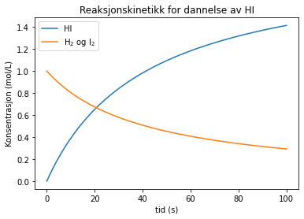
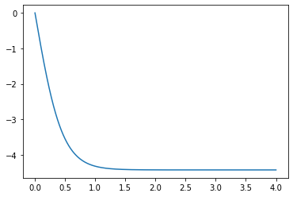
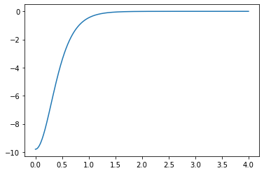
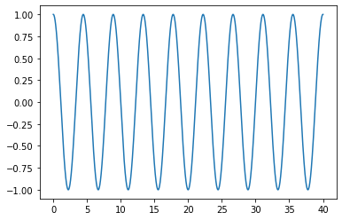
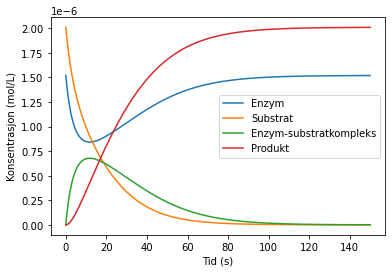
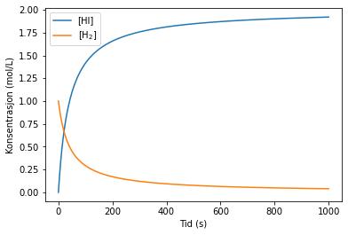
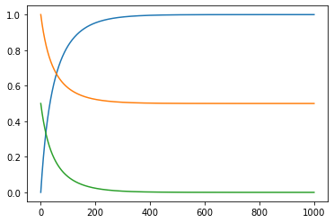

Tema 7: Kontinuerlig modellering og simuleringer¶
Aktiviteter¶
1. Puslespill¶
2. Feilsøking¶
Programmet nedenfor skal regne ut konsentrasjonen til produkter og reaktanter i reaksjonen:
\[ H_2 (g) + I_2 (g) \rightarrow 2HI (g)\]
gitt følgende ratelov:
\[\frac{d[HI]}{dt} = k_r[H_2][I_2]\]
men programmet fungerer ikke som det skal. Rett opp feilene.
import numpy as np
import matplotlib.pyplot as plt
#Initialbetingelser
H0 = 1.0 # Konsentrasjon av hydrogengass i mol/L
I0 = 1.0 # Konsentrasjon av jodgass i mol/L
HI0 = 0 # Konsentrasjon av hydrogenjodid i mol/L
k = 4.84E-2 # Ratekonstant ved ca. 450 grader C
#Tidssteg
dt = 1E-3
tid = 100 # Tid i sekunder
N = int(tid/dt) + 1 # Antall iterasjoner
#Arrayer
t = np.zeros(N+1) # Tid i sekunder
H = np.zeros(N+1) # Konsentrasjon av H2
I = np.zeros(N+1) # Konsentrasjon av I2
HI = np.zeros(N+1) # Konsentrasjon av HI
H[0] = H0
I[0] = I0
HI[0] = HI0
# Eulers metode
for i in range(N):
HIder = k*H[i]*I[i]
Hder = -0.5*HIder
Ider = Hder
HI[i+1] = HI[i] + HIder*dt
H[i+1] = H[i] + Hder*dt
I[i+1] = I[i] + Ider*dt
t[i+1] = t[i] + dt
plt.title('Reaksjonskinetikk for dannelse av HI')
plt.xlabel('tid (s)')
plt.ylabel('Konsentrasjon (mol/L)')
plt.plot(t, HI, label = 'HI')
plt.plot(t, H, label = 'H$_2$ og I$_2$')
plt.legend(loc=0) # Merkelapp med bestemt posisjon i vinduet
plt.show()

Newtons 2. lov og bevegelse¶
# Fysiske størrelser og konstanter
g = 9.8
m = 30
k = 0
dt = 1E-6
# Startbetingelser
s = 15
v = 0
t = 0
while s > 0:
a = -g + k/m*v**2
v = v + a*dt
s = s + v*dt
t = t + dt
print(t)
1.749635999946248
import matplotlib.pyplot as plt
import numpy as np
# Fysiske størrelser og konstanter
g = 9.8
m = 30
k = 0.5
# Startbetingelser
s0 = 15
v0 = 0
# Tidssteg
dt = 1E-3
tid = 4
n = int(tid/dt)
# Array
t = np.zeros(n+1)
s = np.zeros(n+1)
v = np.zeros(n+1)
a = np.zeros(n+1)
# Initialisering
s[0] = s0
v[0] = v0
# Eulers metode
for i in range(n):
a[i] = -g + k*v[i]**2
v[i+1] = v[i] + a[i]*dt
s[i+1] = s[i] + v[i]*dt
t[i+1] = t[i] + dt
plt.plot(t,v)
plt.show()

plt.plot(t[0:i],a[0:i])
plt.show()

Eksempel: Vibrasjonsmodeller¶
Vi kan lage bindingsmodeller som enkle “fjærmodeller”. Da ser vi på atomene som kuler som henger i hver sin ende av en fjær. Dersom fjæra er stiv (høy “fjærkonstant”), vibrerer atomene mye, og motsatt. Enkle fjærkrefter følger Hooks lov:
\[F = -k\cdot (x - x_0)\]
der x er posisjonen og \(x_0\) er likevektsposisjonen, dvs. posisjonen der fjæra ikke er komprimert eller strukket ut.
import numpy as np
import matplotlib.pyplot as plt
# Konstanter og variabler
m = 1 # Masse i kg
k = 2 # Fjærkonstant
x_eq = 0 # Likevektsposisjon i m
v0 = 0 # Startfart i m/s
x0 = 1 # Startposisjon i m
# Tidssteg
dt = 1E-6
tid = 40 # Tid i s
N = int(tid/dt) # Intervaller
# Initialisering
v = np.zeros(N+1)
x = np.zeros(N+1)
t = np.zeros(N+1)
v[0] = v0
x[0] = x0
# Integrasjonsløkke
for i in range(N):
a = -k/m*(x[i]-x_eq)
# Eulers metode
v[i+1] = v[i] + a*dt
x[i+1] = x[i] + v[i]*dt
t[i+1] = t[i] + dt
plt.plot(t,x)
plt.show()

Enzymkinetikk¶
import matplotlib.pyplot as plt
import numpy as np
# Konstanter og variabler
k1 = 7.32E4
k1_back = 1.22E-2
k2 = 7.01E-2
E0 = 1.52E-6
S0 = 2.01E-6
# Tidssteg
tid = 150 # Tid i sekunder
dt = 1E-3 # Tidssteg i s
N = int(tid/dt) # Antall intervaller
# Initialisering
S = np.zeros(N+1)
E = np.zeros(N+1)
ES = np.zeros(N+1)
P = np.zeros(N+1)
t = np.zeros(N+1)
E[0] = E0
S[0] = S0
# Integrasjonsløkke
for i in range(N):
# Ratelovene
dSdt = -k1*E[i]*S[i] + k1_back*ES[i]
dEdt = -k1*E[i]*S[i] + k1_back*ES[i] + k2*ES[i]
dESdt = k1*E[i]*S[i] - k1_back*ES[i] - k2*ES[i]
dPdt = k2*ES[i]
# Eulers metode
S[i+1] = S[i] + dSdt*dt
E[i+1] = E[i] + dEdt*dt
ES[i+1] = ES[i] + dESdt*dt
P[i+1] = P[i] + dPdt*dt
t[i+1] = t[i] + dt
plt.plot(t,E,label='Enzym')
plt.plot(t,S,label='Substrat')
plt.plot(t,ES,label='Enzym-substratkompleks')
plt.plot(t,P,label='Produkt')
plt.legend()
plt.xlabel('Tid (s)')
plt.ylabel('Konsentrasjon (mol/L)')
plt.show()

Organisering av kode som funksjoner¶
Vi bruker følgende reaksjon som eksempel:
\[ H_2 (g) + I_2 (g) \rightarrow 2HI (g)\]
Vi har også følgende ratelov:
\[\frac{d[HI]}{dt} = k_r[H_2][I_2]\]
import numpy as np
import matplotlib.pyplot as plt
# Ratelover
def dHI(H2,I2,k):
return k*H2*I2
def dH2(H2,I2,k):
return -0.5*k*H2*I2
def dI2(H2,I2,k):
return -0.5*k*H2*I2
def forward_euler(HI0,I20,H20,k,tid_slutt,dt=1E-4):
N = int(tid_slutt/dt)
HI = np.zeros(N+1)
H2 = np.zeros(N+1)
I2 = np.zeros(N+1)
t = np.zeros(N+1)
HI[0] = HI0
H2[0] = H20
I2[0] = I20
# Integrasjonsløkke
for i in range(N):
HIder = dHI(H2[i],I2[i],k)
H2der = dH2(H2[i],I2[i],k)
I2der = dI2(H2[i],I2[i],k)
# Eulers metode
HI[i+1] = HI[i] + HIder*dt
H2[i+1] = H2[i] + H2der*dt
I2[i+1] = I2[i] + I2der*dt
t[i+1] = t[i] + dt
return HI, H2, I2, t
HI, H2, I2, t = forward_euler(0,1,1,4.84E-2,1000)
plt.plot(t,HI,label='[HI]')
plt.plot(t,H2,label='[H$_2$]')
plt.legend()
plt.xlabel('Tid (s)')
plt.ylabel('Konsentrasjon (mol/L)')
plt.show()

Numeriske biblioteker¶
\[y' = t - y\]
\[y(0) = 1\]
import numpy as np
import matplotlib.pyplot as plt
from scipy.integrate import solve_ivp
def dydt(t, y):
return t - y
a = 0
b = 10
t = np.linspace(a,b,1000)
y0 = 1
y_int = solve_ivp(dydt, [a,b], [y0], t_eval = t, method='BDF')
plt.plot(y_int.t, y_int.y[0])
[<matplotlib.lines.Line2D at 0x2968a48daf0>]
def ratelover(t,y):
cHI = y[0]
cH2 = y[1]
cI2 = y[2]
k = 4.84E-2
dHIdt = k*cH2*cI2
dH2dt = -0.5*dHIdt
dI2dt = dH2dt
return [dHIdt, dH2dt, dI2dt]
a = 0
b = 1000
t = np.linspace(a,b,10000)
y0 = [0,1,0.5]
y_int = solve_ivp(ratelover, [a,b], y0, t_eval = t, method ='BDF')
plt.plot(y_int.t, y_int.y[0])
plt.plot(y_int.t, y_int.y[1])
plt.plot(y_int.t, y_int.y[2])
plt.show()
